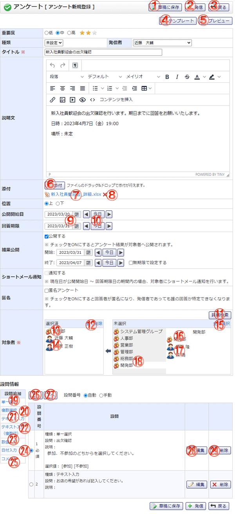

アンケート新規登録画面です。

機能説明
草稿に保存ボタン作成中のアンケートを草稿に登録し、登録完了画面へ遷移します。入力内容に不備がある場合、エラーメッセージが表示されます。 |
発信ボタンアンケート新規作成確認画面へ遷移します。入力内容に不備がある場合、エラーメッセージが表示されます。 |
|---|---|
戻るボタン遷移元の画面へ遷移します。 |
テンプレートボタンポップアップでテンプレート選択画面が開きます。テンプレートを選択すると、テンプレートの内容が適用されます。 |
プレビューボタンプレビュー画面に遷移します。作成中のアンケートが、回答画面でどのように表示されるかを確認します。 |
添付ボタンフォルダウィンドウが開きます。フォルダウィンドウでファイルを選択すると、添付ボタンの下にファイル名が表示されます。 |
ファイル名ファイルがダウンロードされます。 |
削除アイコン添付ファイルを削除します。 |
カレンダーボタン日付選択カレンダーを表示します。 |
前日・今日・翌日ボタン日付を設定します。 |
詳細検索ボタンユーザ選択ポップアップが表示されます。 |
全て削除ボタン選択済エリアに表示されている全てのグループおよびユーザを未選択状態にします。 |
選択済グループグループ名をクリックすることで、グループを未選択状態にします。 |
選択済ユーザユーザ名をクリックすることで、ユーザを未選択状態にします。 |
全て選択ボタン未選択エリアに表示されている全てのグループおよびユーザを選択済エリアに追加します。 |
未選択グループグループ名をクリックすることで、グループを選択済エリアに追加します。 |
未選択ユーザユーザ名をクリックすることで、ユーザを選択済エリアに追加します。 |
グループ名グループ名をクリックすることで、グループおよびグループに所属するユーザが未選択エリアに表示されます。 |
設問追加 単一選択リンク設問種類[単一選択]の追加画面に遷移します。 |
設問追加 複数選択リンク設問種類[複数選択]の追加画面に遷移します。 |
設問追加 テキスト入力リンク設問種類[テキスト入力]の追加画面に遷移します。 |
設問追加 テキスト入力(複数行)リンク設問種類[テキスト入力(複数行)]の追加画面に遷移します。 |
設問追加 数値入力リンク設問種類[数値入力]の追加画面に遷移します。 |
設問追加 日付入力リンク設問種類[日付入力]の追加画面に遷移します。 |
設問追加 コメントリンク設問種類[コメント]の追加画面に遷移します。 |
上へボタンラジオボタンで選択されている設問を、一つ上へ移動します。 |
下へボタンラジオボタンで選択されている設問を、一つ下へ移動します。 |
設問 編集ボタンアンケート設問の編集画面へ遷移します。 |
設問 削除ボタンアンケートの設問を削除します。 |
表示・入力項目説明
重要度
アンケートの重要度を選択します。
種類
アンケートの種類名を選択します。
発信者
アンケートの発信者を選択します。
タイトル
アンケートのタイトルを入力します。
説明文
アンケートの説明文を入力します。
添付
添付したファイル名を表示します。
位置
追加した添付ファイルの位置を選択します。「上」を選択すると説明文の上部に、「下」を選択すると説明文の下部に表示します。添付ファイルが存在するときだけ設定できます。
公開開始日
アンケートの公開開始日を選択します。公開開始日を迎えていないアンケートは、受信者には表示されません。
回答期限
アンケートの回答期限を選択します。回答期限の過ぎたアンケートは、回答することができなくなります。
結果公開
アンケートの結果公開開始日、結果公開終了日を選択します。結果公開期間外のアンケートは、結果公開アンケートであっても、受信者は結果確認の閲覧ができなくなります。
ショートメール通知
ショートメール通知区分を選択します。選択した状態でアンケートを発信すると、回答者にショートメールを通知します。
匿名
アンケートの匿名を選択します。匿名アンケートの場合、結果確認で回答データのみ閲覧することができ、回答者名は非表示となります。
対象者
アンケートの対象者を、ユーザーリストから選択し追加します。
設問番号
アンケートの設問番号設定区分を選択します。「手動」を選択すると、設問追加・編集画面で任意の番号を入力することができます。